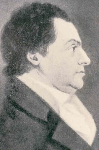
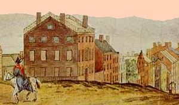

|
by Stefan Bielinski Philip S. Van Rensselaer was born n in April 1766. He was the second of three children born to Stephen II and his wife Catharina Livingston Van Rensselaer. His older brother was Stephen Van Rensselaer and his sister, Elizabeth, furthered the Van Rensselaer name with marriages into the Schuyler and Bleecker families. Losing his father in 1769, the boy grew up at the Manor House supported by an extensive and advantaged family. His mother re-married in 1775 - bringing her new husband, Dominie Eilardus Westerlo, into Philip's young life. While his older brother assumed the title of lord of Rensselaerswyck, Philip became a merchant and was headquartered in Albany. He was able to use his legacies to invest in a number of business ventures and was a prominent member and officer of a number of banking, insurance, transportation, and civic improvement organizations. In 1787, he married Westchester native Anne De Peyster Van Cortlandt - daughter of the state's first lieutenant governor. Anticipating a large family, Philip built a grand home on upper State Street. However, the union produced no children. As early as 1790, his large home at 87 State was attended by five slaves. A decade later, his household included six slaves.  He entered city government in 1793 as an alderman for the first ward. In 1798, he was appointed mayor of Albany. He was re-appointed annually until 1816 when he was replaced by relative newcomer Elisha Jenkins in a politically motivated move. However, he was mayor again from 1819 to 1821. Over his long tenure, Albany underwent a dramatic transformation. With roots set deeply into Albany's past, as an important member of the post-revolutionary business community, and well-connected across a range of social and cultural institutions, Philip S. Van Rensselaer understood these diverse and potentially conflicting imperatives and was able to help orchestrate the city's development over two key decades. He owned a number of storehouses, space along the Albany waterfront, and a flour and plaster mill along the Normanskill - both of which were destroyed by fire in 1820. His long public and business careers were substantial and complex. But both are largely beyond the scope of our basic inquiry! Mayor of Albany for almost twenty years, Philip S. Van Rensselaer died on September 25, 1824 at age fifty-eight. This city father was buried from his residence at State and Chapel Streets.
Detail from a painting looking down State Street by James Eights. Print copy in Graphics Archive of the CAP. Slaves: With six slaves counted in his household on the census of 1800, records show that over the next decade he manumitted at least eight of them - although two were freed "on condition they move out of Albany County." first posted: 2/20/02 |